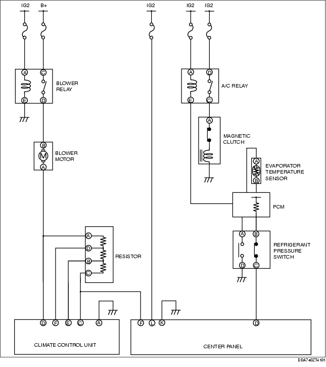

Mazda2
service manual
Search the manual
Home
Workshop Manual
Heater, ventilation & air conditioning
Symptom troubleshooting
HVAC system wiring diagram
HVAC system wiring diagram

Next
Foreword
Also listed under:
Troubleshooting / Heater, ventilation & air conditioning
.